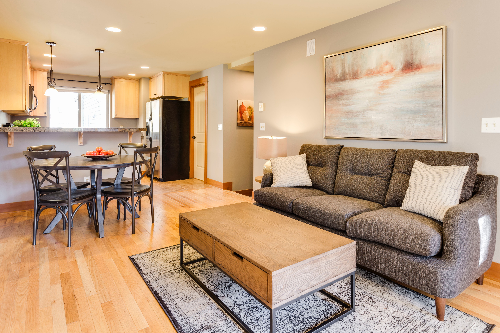
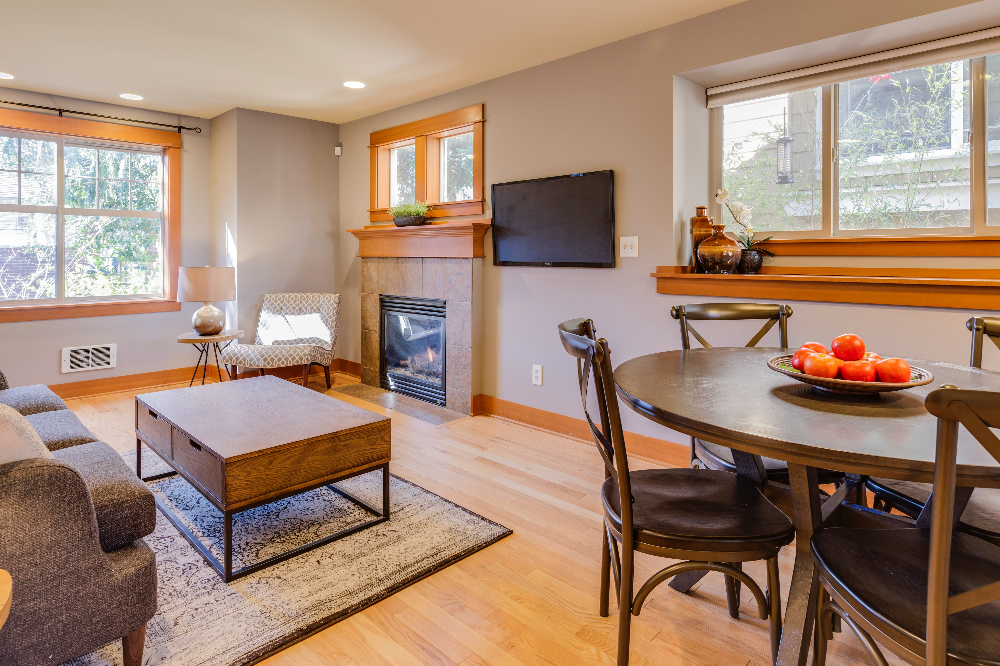

Usando una combinación de nuestras gamas Moderno y Acojedor trabajamos sobre esta cocina-comedor.


Si bien pudimos resolverlo, el desafío fué encontrar ese tono oscuro que complemente a la perfección con el diseño.